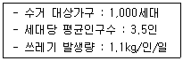
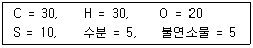
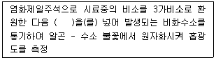

폐기물처리산업기사 (2005-03-06 기출문제)
1과목: 폐기물개론
1. 폐기물 적재차량 중량이 20,000㎏, 빈차의 중량이 14,000㎏이고, 적재함의 크기는 H : 150㎝, W : 200㎝, L : 400㎝일 때 차량적재계수는?
- 0.35t/m3
- 0.⑤t/m3
- 0.03t/m3
- 0.5t/m3
(정답률: 알수없음)

2. 쓰레기 수송차량으로 고속도로를 주행할 때 충족되어야 하는 조건으로 가장 거리가 먼 것은?
- 차량은 고정용기 체계를 도입하여 흔들림을 방지하여야 한다.
- 차량의 용량이 알맞게 설계되어 중량초과가 없어야 한다.
- 최소비용으로 수송되어야 한다.
- 적하작업이 간단하고 실용적이어야 한다.
(정답률: 알수없음)
3. 충격식파쇄장치에 관한 설명과 가장 거리가 먼 것은?
- 대량처리가 가능하다.
- 연성이 있는 물질에는 부적합하다.
- 파쇄물의 크기를 고르게 할 수 있다.
- 유리류나 목질류 파쇄에 적합하다.
(정답률: 알수없음)
4. 인구 800만명의 도시에서 발생되는 폐기물의 가연 성분을 이용하여 RDF를 생산하고자 한다. 최대생산량(ton/일)은? (단, 폐기물 중 가연성분 80%(무게기준), 가연성분 회수율 50%(무게기준), 폐기물 발생량 1.3㎏/인·일)
- 3,920
- 4,160
- 5,230
- 6,340
(정답률: 알수없음)
5. 전과정평가(LCA)는 4부분으로 구성된다. 다음 중 환경부하에 대한 영향을 평가하는 기술적, 정량적, 정성적 과정에 해당하는 것은?
- impact analysis
- initiation analysis
- inventory analysis
- improvement analysis
(정답률: 알수없음)
6. A도시의 폐기물 수거량이 2,000,000ton/year 이며, 수거인부는 1일 4,000명이고 수거 대상인구는 5,000,000인이다. 그리고 수거인부의 일 평균작업시간은 5시간이라고 할 때, MHT는? (단, 1년은 365일 기준 )
- 1.83MHT
- 2.97MHT
- 3.65MHT
- 4.21MHT
(정답률: 알수없음)
7. 다음 쓰레기 발생량이 커지는 이유로서 가장 거리가 먼 경우는?
- 도시의 규모가 크다.
- 수집빈도가 낮다.
- 쓰레기통이 크다.
- 생활수준이 높다.
(정답률: 알수없음)
8. 함수율 40%인 슬러지를 건조시켜 함수율을 20%로 하였을 경우 1톤당 증발되는 수분의 양은?
- 0.15 ton
- 0.20 ton
- 0.25 ton
- 0.30 ton
(정답률: 알수없음)
9. 쓰레기 발생량을 예측하는 방법 중 쓰레기 배출에 영향을 주는 모든 인자를 시간에 대한 함수로 나타낸 후 시간에 대한 함수로 표현된 각 영향인자들 간에 상관관계를 수식화한 것은?
- 경향법
- 추정법
- 동적모사모델
- 다중회귀모델
(정답률: 알수없음)
10. 폐기물 중 철금속(Fe)/ 비철금속(Al, Cu)/ 유리병의 3종류를 각각 분리할 수 있는 방법으로 가장 적절한 것은?
- 자력선별법
- 정전기선별법
- 와전류선별법
- 풍력선별법
(정답률: 알수없음)
11. 다음과 같은 조건하에서 1주일에 2회 수거하는 지역 내의 1회 수거 쓰레기량은?

- 4.5톤
- 9.0톤
- 13.5톤
- 18.0톤
(정답률: 알수없음)
12. 물에 잠겨진 스크린 위에 분류하려는 폐기물을 넣고 수위를 1초당 2.5회 가량 0.5~5cm의 폭으로 변화시키면서 선별하는 방법은?
- stoners
- secators
- table
- jigs
(정답률: 알수없음)
13. 쓰레기의 입도를 분석하여 입도 누적곡선을 그렸다. 이 때 통과 백분율의 10％에 대응하는 입경을 D10, 통과백분율의 60％에 대응하는 입경을 D60이라 할 때 입자의 균등계수를 나타내는 식으로 옳은 것은?
- D10 / D60
- D60 / D10
- D10 - D60
- D10 × D60
(정답률: 알수없음)
14. 폐기물 발생량 조사방법 중 표본조사의 장점과 가장 거리가 먼 것은?
- 경비가 적게 든다.
- 조사기간이 짧다.
- 조사상 오차가 크다.
- 행정시책의 이용도가 높다.
(정답률: 알수없음)
15. 쓰레기의 수집, 운송방식 중 고층주택밀집지역에 적합하며 소음방지시설이 필요한 수송방법은?
- Conveyor system
- Pneumatic collection system
- Slurry system
- Capsule system
(정답률: 알수없음)
16. 효과적인 수거를 위한 쓰레기 수거차량의 노선 결정시 유의할 사항으로 옳지 않은 것은?
- 가급적 출·퇴근 시간을 피한다.
- 언덕을 오르면서 쓰레기를 적재한다.
- U자형 회전을 피한다.
- 가급적 시계방향으로 노선을 정한다.
(정답률: 알수없음)
17. 다음 중 쓰레기 저위발열량 측정방법이 아닌 것은?
- 비중 측정에 의한 분석
- 물리적 조성 분석치에 의한 방법
- 단열 열량계에 의한 방법
- 원소 분석에 의한 방법
(정답률: 알수없음)
18. 폐기물 발생량을 장래 예측하기 위하여 기존에 사용 되어진 인자들이 아닌 것은?
- 인구변동
- 자원회수량
- GNP
- 엥겔지수
(정답률: 알수없음)
19. 다음과 같은 조성의 폐기물의 고위발열량(kcal/kg)은? (단, 탄소, 수소, 황의 연소반응열은 각각 8100kcal/kg, 34000kcal/kg, 2500kcal/kg으로 하며 Dulong식을 이용)

- 11030 kcal/kg
- 12030 kcal/kg
- 13030 kcal/kg
- 14030 kcal/kg
(정답률: 알수없음)
20. 산소나 수증기가 없는 상태에서 간접가열에 의해 유기물질로부터 기체, 액체, 고체 연료를 회수하는 기술은?
- Pyrolysis
- Gasification
- Wet Oxidation
- Hydrogasification
(정답률: 알수없음)
2과목: 폐기물처리기술
21. 소화조 가스의 열량을 측정한 결과 6,300kcal/m3였다. 메탄가스의 함유량(%)은 얼마로 추정할 수 있는가? (단, 메탄가스 열량 = 9,000kcal/m3 , 메탄이외의 가스는 불연소성이라 가정함)
- 50%
- 60%
- 65%
- 70%
(정답률: 알수없음)
22. 다음 중 슬러지 처리 계통도가 가장 올바르게 된 것은?
- 농축 → 안정화 → 개량 → 탈수 → 소각
- 탈수 → 개량 → 건조 → 안정화 → 소각
- 개량 → 안정화 → 농축 → 탈수 → 소각
- 탈수 → 건조 → 안정화 → 개량 → 소각
(정답률: 알수없음)
23. 다음 중 폐기물의 재생 및 재이용과 거리가 먼 것은?
- RDF
- Land Fill
- Composting
- Pyrolysis
(정답률: 알수없음)
24. 1일 폐기물 발생량 2,000m3 인 도시에서 3m3 용량의 쓰레기 차량으로 쓰레기를 투기장까지 운반코자 한다. 1일 운행시간 8hr, 운반거리 2km, 적재시간 25분, 운송시간(왕복)10분, 적하시간 10분, 대기차량 2대를 고려하면 소요차량대수는?
- 33대
- 45대
- 55대
- 65대
(정답률: 알수없음)
25. 매립시 적용되는 연직차수막과 표면차수막에 관한 설명으로 옳지 않은 것은?
- 연직차수막은 수평방향의 차수층 존재시 사용된다.
- 연직차수막은 지하수 집배수시설이 불필요하다.
- 연직차수막은 지하매설로써 차수성 확인이 어려우나 표면차수막은 시공시 확인이 가능하다.
- 연직차수막은 표면차수막에 비하여 단위면적당 공사비가 저렴하다.
(정답률: 알수없음)
26. C6H6 1Sm3 가 완전 연소하는데 소요되는 이론 공기량(Sm3)은?
- 31.4
- 35.7
- 38.3
- 39.7
(정답률: 알수없음)
27. 폐기물을 완전 연소시키기 위한 소각로의 연소조건에 해당하지 않는 것은?
- 충분한 체류시간
- 충분한 난류
- 충분한 압력
- 적당한 온도
(정답률: 알수없음)
28. 분뇨 150㎘/day를 중온소화하였다. 일반적으로 1일간에 얻어지는 열량으로 가장 알맞는 것은? (단, CH4 발열량은 6000Kcal/m3으로 하며 발생가스는 전량 메탄으로 가정하고 가스량도 투입량의 8배로 한다.)
- 7.2 × 106Kcal/day
- 6.3 × 107Kcal/day
- 5.9 × 108Kcal/day
- 4.5 × 109Kcal/day
(정답률: 알수없음)
29. 유동층소각로의 장·단점에 대한 설명으로 옳지 않은 것은?
- 기계적 구동부분이 많아 고장이 잦다.
- 석회 또는 반응물질을 유동매체에 혼입시켜 로 내에서 산성가스의 제거가 가능하다.
- 반응시간이 빨라 소각시간이 짧고 로 부하율이 높다.
- 과잉공기량이 적으므로 다른 소각로 보다 보조연료사용량과 배출가스가 적다.
(정답률: 알수없음)
30. 함수율 95%의 슬러지를 함수율 75%의 탈수 cake로 하였을 때의 체적비는 얼마인가?
- 1/2
- 1/3
- 1/4
- 1/5
(정답률: 알수없음)
31. 생활폐기물과 지정폐기물의 분류기준으로 가장 적절한 것은?
- 발생원
- 발생량
- 유해성
- 용융성
(정답률: 알수없음)
32. 침출수 처리를 위한 방법 중 Fenton 산화처리에 관한 설명과 가장 거리가 먼 것은?
- pH조정조, 급속교반조, 완속교반조, 침전지시설이 필요하다.
- 난분해성 유기물질의 제거 및 NBDCOD를 BDCOD로 변환시켜 생분해성을 증가시킨다.
- 유입수질의 변화시 탄력적인 대응이 가능하다.
- 시설비와 유지관리비가 오존처리 또는 활성탄처리법 보다 많이 소요된다.
(정답률: 알수없음)
33. 협기성 분해에 영향을 주는 인자로서 가장 거리가 먼 것은?
- 탄질비
- pH
- 유기산농도
- 온도
(정답률: 알수없음)
34. 일반적으로 폐기물의 퇴비화에 영향을 미치는 요인과 가장 거리가 먼 것은?
- 온도
- C/N비
- 다짐정도
- 함수율
(정답률: 알수없음)
35. 분뇨처리장의 방류수량이 2,000m3/day 일 때 15분간 염소 소독을 할 경우 소독조의 크기는?
- 21m3
- 32m3
- 38m3
- 43m3
(정답률: 알수없음)
36. 인구 25,000명인 도시에서 1인 1일 쓰레기 배출량이 1.5kg 이고 밀도가 0.45ton/m3인 쓰레기를 매립용량이 10,000m3 인 도랑식 트랜치에 매립, 처분하고자 할 때 트랜치의 사용 일수는? (단, 매립시 부피감소율은 35% 임)
- 185일
- 193일
- 213일
- 224일
(정답률: 알수없음)
37. 유해성 폐기물을 고형화하여 처리하는 방법 중 시멘트기초법에 대한 설명으로 가장 옳은 것은?
- 일반적으로 저농도 중금속에 적당한 방법이다.
- 폐기물의 건조나 탈수과정이 따로 필요하다.
- 높은 pH에서 폐기물성분의 용출 가능성이 있다.
- 폐기물의 무게와 부피를 증가시킨다.
(정답률: 알수없음)
38. 고형분 20%의 주방찌꺼기 12톤이 있다. 소각을 위하여 함수율이 40%되게 건조시켰다면 이 때의 무게는?
- 3톤
- 4톤
- 5.4톤
- 6톤
(정답률: 알수없음)
39. 매립 후 경과기간에 따른 가스 구성성분의 변화단계중 CH4와 CO2의 함량이 거의 일정한 정상상태의 단계는?
- I단계 - 호기성단계(초기조절단계)
- II단계 - 혐기성단계(전이단계)
- III단계 - 혐기성단계(산형성단계)
- IV단계 - 혐기성단계(메탄발효단계)
(정답률: 알수없음)
40. 호기성 소화에 관한 설명으로 가장 거리가 먼 것은?
- 발생된 슬러지의 탈수성이 우수하다.
- 처리수내의 유지류의 농도가 낮다.
- 상등액의 BOD, SS가 낮으며 암모니아 농도도 낮다.
- 온도에 따라 효율이 매우 다르다.
(정답률: 알수없음)
3과목: 폐기물 공정시험 기준(방법)
41. 대상폐기물의 양이 1,700톤인 경우 시료의 최소 수로 적절한 것은?
- 50
- 60
- 70
- 80
(정답률: 알수없음)
42. 이온전극법에서 사용하는 전극이 아닌 것은?
- 유리막형 전극
- 고체막형 전극
- 격막형 전극
- 모세관형 전극
(정답률: 알수없음)
43. 원추 4분법에 의해 시료를 축소하는 경우 한번의 조작이 끝났을 때 시료량은 처음 시료량의 얼마만큼으로 되는가?
- 1/2
- 1/4
- 1/8
- 1/16
(정답률: 알수없음)
44. 원자흡광광도법 분석장치에 관한 설명으로 옳지 않은 것은?
- 광원부에 주로 사용되는 것은 중공음극램프이다.
- 시료원자화부에 사용되는 버너는 전분무버너와 예혼합버너 등이 있다.
- 아세틸렌-일산화이질소의 불꽃온도는 다른 가스에 비해 낮다.
- 분광기는 일반적으로 회절격자나 프리즘을 사용한다.
(정답률: 알수없음)
45. 폐기물 중에 함유되어 있는 시안을 흡광광도법으로 측정코자 한다. 폐기물공정시험 방법상 규정된 시안측정법은?
- 피리딘피라졸론법
- 디에틸디티오카르바민산법
- 디티존법
- 디페닐카르바지드법
(정답률: 알수없음)
46. 액상폐기물 500㎖ 중에 함유되어 있는 유분을 측정하고자 노말헥산 추출시험방법으로 시험하였다. 시험전후의 증발 용기의 무게차가 50㎎, 바탕시험 전후의 증발용기의 무게차가 4㎎ 이었다면 노말헥산 추출물질의 농도는?
- 108㎎/ℓ
- 92㎎/ℓ
- 88㎎/ℓ
- 76㎎/ℓ
(정답률: 알수없음)
47. 구리를 흡광광도법으로 정량하고자 한다. 다음 설명 중 틀린 것은?
- 시료 중에 시안화합물이 존재시 황산산성하에서 끊여 시안화물을 완전히 분해 제거한다.
- 비스무스(Bi)가 구리의 양보다 2배 이상 존재시 황색을 나타내어 방해한다.
- 추출용매는 초산부틸 대신 사염화탄소, 클로로포름, 벤젠 등을 사용할 수도 있다.
- 무수황산나트륨 대신 건조여지를 사용하여 여과하여도 된다.
(정답률: 알수없음)
48. 용출시험 방법에서 여과가 어려운 경우 원심분리하기 위한 조건으로 가장 적당한 것은?
- 1,000회전/분이상, 30분이상
- 3,000회전/분이상, 20분이상
- 1,000회전/분이상, 10분이상
- 3,000회전/분이상, 10분이상
(정답률: 알수없음)
49. pH미터는 한 종류의 pH표준액에 대하여 검출부를 물로 잘 씻은 다음, 5회 되풀이 측정한 그 재현성이 얼마 이내의 것을 사용하는가?
- ±0.5
- ±0.3
- ±0.1
- ±0.⑤
(정답률: 알수없음)
50. 폐기물공정시험방법에서 용액의 %농도를 표현하는 일반적인 방법은?
- W/W %
- W/V %
- V/W %
- V/V %
(정답률: 알수없음)
51. 총칙에서 규정하고 있는 사항중 옳은 것은?
- "감압 또는 진공"이라 함은 따로 규정이 없는 한 10mmHg 이하를 말한다.
- "약"이라 함은 기재된 양에 대하여 ±5% 이상의 차이가 있어서는 안된다.
- "냄새가 없다"라고 기재한 것은 냄새가 없거나 또는 거의 없는 것을 표시하는 것이다.
- "정확히 단다"라 함은 규정된 양의 검체를 취하여 분석용 저울로 0.01mg까지 다는 것을 말한다.
(정답률: 알수없음)
52. 시안을 이온전극법으로 측정하고자 하는 경우, 시료용액의 액성은?
- 산성
- 중성
- 알카리성
- 모든 액성 가능함
(정답률: 알수없음)
53. 원자흡광광도법(환원기화법)을 이용한 수은측정에 관한 설명으로 옳지 않은 것은?
- 유기물 및 기타 방해물질이 함유되지 않는 시료는 시료 전처리를 생략한다.
- 시료중 염화물 이온이 다량 함유된 경우에는 산화 조작시 유리염소를 발생하여 253.7㎚에서 흡광도를 나타낸다.
- 벤젠, 아세톤 등 휘발성 유기물질은 253.7㎚에서 흡광도를 나타낸다.
- 시료의 측정이 끝나면 배기콕크를 열고 과망간산칼륨을 함유한 여지에 통과시켜 수은을 제거한 후 대기 중에 방출한다.
(정답률: 알수없음)
54. 취급 또는 저장하는 동안에 기체 또는 미생물이 침입하지 아니하도록 내용물을 보호하는 용기는?
- 밀봉용기
- 기밀용기
- 밀폐용기
- 차광용기
(정답률: 알수없음)
55. 비소를 원자흡광광도법으로 측정할 때의 원리를 설명한 것이다. ( )안에 알맞은 것은?

- 염화제이철
- 중크롬산칼륨
- 염화제이수은
- 아연
(정답률: 알수없음)
56. 가스크로마토그래프 분석에 사용되는 검출기 중 유기할로겐화합물, 니트로화합물 및 유기금속화합물을 선택적으로 검출하기에 가장 적절한 것은?
- ECD(전자포획형 검출기)
- FPD(불꽃광형 검출기)
- FID(불꽃이온화 검출기)
- TCD(열전도도 검출기)
(정답률: 알수없음)
57. 유도결합플라즈마발광광도(ICP) 분석장치의 플라즈마 가스로 주로 사용되는 것은?
- 압축 수소가스
- 압축 알곤가스
- 압축 네온가스
- 압축 아세틸렌가스
(정답률: 알수없음)
58. 강도 Io의 단색광이 정색액을 통과할 때 그 빛의 80%가 흡수되었다면 흡광도는?
- 0.297
- 0.347
- 0.698
- 0.804
(정답률: 알수없음)
59. 흡광 광도법에 의한 시안 측정시 넣는 시약 중 잔류염소에 의한 영향을 줄이기 위해 가하는 시약은?
- 질산 (1+4)
- 클로라민 T
- L-아스코르빈산
- 피리딘 피라졸론 혼액
(정답률: 알수없음)
60. 시료의 채취에 관한 설명으로 옳지 않은 것은?
- 시료의 양은 1회에 100g이상 채취한다.
- 채취시료는 수분, 유기물등 함유성분의 변화가 일어나지 않도록 0~4℃이하의 냉암소에 보관한다.
- 액상혼합물의 경우는 원칙적으로 최종지점의 낙하구 에서 흐르는 도중에 채취한다.
- 대형고형물로 분쇄가 어려울 경우는 대표적 성상을 대신할 수 있는 물질로 대체할 수 있다.
(정답률: 알수없음)
4과목: 폐기물 관계 법규
61. 지정폐기물에 관한 설명 중 알맞지 않은 것은?
- 폐산(액체상태의 폐기물로서 수소이온농도지수가 2.0이하인 것에 한한다.)
- 폴리클로리네이티드비페닐함유 폐기물(액상상태의 것 : 1리터당 2밀리그램 이상 함유한 것에 한한다.)
- 폐농약(농약의 제조, 판매업소에서 발생되는 것에 한한다.)
- 폐석면(석면의 제조, 가공시 또는 공작물, 건축물의 제거시 발생되는 것에 한한다.)
(정답률: 알수없음)
62. 폐기물 처리시설에서 배출되는 오염물질인 다이옥신의 측정기관과 가장 거리가 먼 것은?
- 환경관리공단
- 산업기술시험원
- 국립환경연구원
- 서울특별시, 경기도 보건환경연구원
(정답률: 알수없음)
63. 환경부령으로 정하는 음식물류폐기물처리시설의 검사 기관과 가장 거리가 먼 것은?
- 환경관리공단
- 산업기술시험원
- 국립환경연구원
- 시,도 보건환경연구원
(정답률: 알수없음)
64. 특정시설에서 발생되는 지정폐기물중 오니류에 대한 설명으로 가장 알맞는 것은?
- 수분함량이 85퍼센트미만이거나 고형물함량이 15퍼센트 이상인 것
- 수분함량이 90퍼센트미만이거나 고형물함량이 10퍼센트 이상인 것
- 수분함량이 95퍼센트미만이거나 고형물함량이 5퍼센트 이상인 것
- 수분함량이 99퍼센트미만이거나 고형물함량이 1퍼센트 이상인 것
(정답률: 알수없음)
65. 다음 보기(폐기물관리법에서 사용하는 용어의 정의)중 알맞지 않은 것은?
- 생활폐기물은 사업장 폐기물외의 폐기물을 말한다.
- 폐기물처리시설은 폐기물의 중간처리시설과 최종처리시설로서 대통령령이 정하는 시설을 말한다.
- 지정폐기물은 사업활동에 수반하여 발생되는 폐유, 폐산 등 환경 및 국민보건에 유해한 물질로 환경부령이 정하는 물질이다.
- 처리란 폐기물의 소각, 중화, 파쇄, 고형화 등에 의한 중간 처리와 매립, 해역배출 등에 의한 최종 처리를 말한다.
(정답률: 알수없음)
66. 관리형 매립시설 침출수의 부유물질량의 배출허용기준으로 알맞은 것은? (단, 나지역, 단위 : mg/L )
- 50
- 70
- 100
- 150
(정답률: 알수없음)
67. 기술관리인을 두어야 할 폐기물처리시설은?
- 입축시설로 1일 처리능력이 50톤인 시설
- 연료화시설로 1일 처리능력이 3톤인 시설
- 멸균분쇄시설로서 시간당 처리능력이 150킬로그램인 시설
- 소각시설(감염성폐기물대상)로서 시간당 처리능력이 100킬로그램인 시설
(정답률: 알수없음)
68. 다음 중 폐기물 중간처리시설중 기계적 처리시설에 속하는 것은?
- 고형화시설
- 연료화시설
- 소멸화시설
- 응집, 침전시설
(정답률: 알수없음)
69. 주변지역 영향 조사대상 폐기물처리시설 기준으로 적절한 것은?
- 매립면적 5만 제곱미터 이상의 사업장 일반폐기물 매립시설
- 매립면적 10만 제곱미터 이상의 사업장 일반폐기물 매립시설
- 매립면적 1만 제곱미터 이상의 사업장 지정폐기물 매립시설
- 매립면적 3만 제곱미터 이상의 사업장 지정폐기물 매립시설
(정답률: 알수없음)
70. 폐기물재활용신고자가 시도지사로부터 승인을 얻은 보관시설(폐기물처리사업장외의 장소에서의 폐기물보관시설)에 태반을 보관하는 경우 시도지사가 보관시설을 승인함에 있어 따라야 하는 기준으로 알맞는 것은?
- 보관시설에서의 태반보관허용량은 10톤 미만일 것
- 보관시설에서의 태반보관허용량은 20톤 미만일 것
- 태반의 배출장소와 그 태반재활용시설이 있는 사업장과의 거리가 100킬로미터 이하일 것
- 보관시설에서의 태반보관기간은 태반이 보관시설에 도착한 날부터 5일 이내로 하도록 할 것
(정답률: 알수없음)
71. 관리형 매립시설에서 발생되는 침출수내 PCB 함유량의 배출허용기준으로 적절한 것은? (단, 청정지역, 단위 : mg/L)
- 불검출
- 0.0⑤ 이하
- 0.01 이하
- 0.⑤ 이하
(정답률: 알수없음)
72. 사업계획의 적정통보를 받은 자의 폐기물 처리업 허가신청서의 제출기한에 대한 기술이다. 이중 적절한 내용은?
- 폐기물 수집, 운반업의 경우는 1개월 이내
- 폐기물 수집, 운반업의 경우는 3개월 이내
- 소각시설의 설치가 필요한 경우는 2년 이내
- 소각시설의 설치가 필요한 경우는 3년 이내
(정답률: 알수없음)
73. 폐기물발생억제지침 준수의무대상 배출자의 규모기준을 알맞게 나타낸 것은?
- 최근 2년간 연평균 배출량을 기준으로 지정폐기물을 300톤 이상 배출하는 자
- 최근 2년간 연평균 배출량을 기준으로 지정폐기물을 200톤 이상 배출하는 자
- 최근 3년간 연평균 배출량을 기준으로 지정폐기물을 300톤 이상 배출하는 자
- 최근 3년간 연평균 배출량을 기준으로 지정폐기물을 200톤 이상 배출하는 자
(정답률: 알수없음)
74. 지정폐기물을 인계 또는 처리하기 전에 폐기물인계서에 환경부장관의 검인을 받아야 하는 규정을 위반하여 검인을 받지 아니한 자에 대한 벌칙기준으로 알맞는 것은?
- 1년 이하의 징역 또는 5백만원 이하의 벌금에 처한다
- 2년 이하의 징역 또는 1천만원 이하의 벌금에 처한다
- 3년 이하의 징역 또는 2천만원 이하의 벌금에 처한다
- 5년 이하의 징역 또는 3천만원 이하의 벌금에 처한다
(정답률: 알수없음)
75. 폐기물 또는 재활용한 제품의 유해물질 함유여부의 검사를 위한 시험분석기관이라 볼 수 없는 것은?
- 유역환경청
- 수도권매립지관리공사
- 환경보존협회
- 환경관리공단
(정답률: 알수없음)
76. 폐기물의 에너지 회수기준으로 틀린 것은?
- 다른 물질과 혼합하지 아니하고 당해 폐기물의 저위발열량이 킬로그램당 3천킬로칼로리 이상일 것
- 에너지 회수효율(회수에너지 총량을 투입에너지총량으로 나눈 비율을 말한다)이 75% 이상일 것
- 회수열을 전량 열원으로 스스로 이용하거나 다른 사람에게 공급할 것
- 환경부장관이 정하여 고시하는 경우에는 폐기물의 50%이상을 원료 또는 재료로 재활용하고 그 나머지 중에서 에너지의 회수에 이용할 것
(정답률: 알수없음)
77. 폐기물관리종합계획에 포함되어야 할 사항과 가장 거리가 먼 것은?
- 폐기물관리정책의 평가
- 종합계획의 기조
- 폐기물관리여건 및 전망
- 재원조달 계획
(정답률: 알수없음)
78. 중간처리시설중 소각시설과 가장 거리가 먼 것은?
- 열처리시설
- 열분해시설(가스화시설 포함)
- 고온소각시설
- 고온용융시설
(정답률: 알수없음)
79. 폐기물처리시설중 기계적 처리시설인 유수분리시설에서 회수유저장조의 용적기준은?
- 3세제곱미터 이상
- 5세제곱미터 이상
- 10세제곱미터 이상
- 30세제곱미터 이상
(정답률: 알수없음)
80. 폐기물처리법의 업종이 아닌 것은?
- 폐기물 재생처리업
- 폐기물 종합처리업
- 폐기물 중간처리업
- 폐기물 운반, 수집업
(정답률: 알수없음)